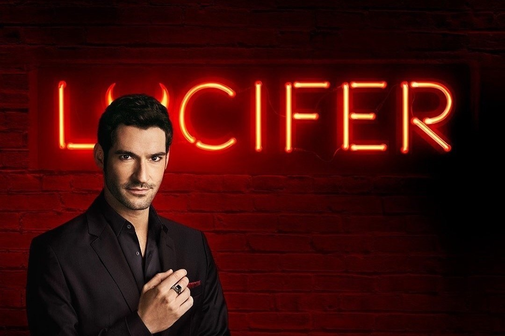

Directed by Tom Kapinos
After growing weary of living in hell, Lucifer Morningstar decides to go to Los Angeles. He uses his knowledge and telepathic skills to bring people's innermost wants and ideas to the surface while he's there, alleviating humanity's sufferings. After a firefight involving him and the detective at a meeting in his nightclub (Lux), he decides to join the LAPD as a consultant in an effort to hold criminals accountable through the use of law and justice.
Tom Ellis

Lauren German

Kevin Alejandro

When it was on Fox, it was good or great. When Netflix picked it up for seasons 4–6, it became outstanding. The storylines and character development became more intricate and emotionally charged. Netflix freed the show from the constraints that Fox had placed on it. The final show of the series had me sobbing—not in sadness but in joy. It is extremely rare for me to become emotionally and intellectually invested in a television series or, for that matter, a film. This one did it for me. The acting is excellent, the storylines are excellent, and the set design and special effects are superb.